GIS Project · MCDAProgetto GIS · MCDA
Where would you build the first human base? A GIS multi-criteria suitability analysis (MCDA) built entirely on open NASA/USGS data.Un'analisi multicriterio (MCDA) sviluppata in QGIS che integra morfologia del terreno, accesso all'acqua ghiacciata, geologia, insolazione e temperatura su dati aperti NASA/USGS, per individuare le aree più idonee a ospitare una futura base umana.
The project aims to identify the areas most suitable to host a future human base on Mars through a multi-criteria analysis (MCDA) developed entirely in QGIS. Instead of focusing on the biological aspects (such as the search for microbial life), the study adopts a purely engineering perspective, focusing on the suitability for building a hypothetical Martian base.L'obiettivo del progetto è individuare le aree più idonee a ospitare una futura base umana su Marte attraverso un'analisi multicriteriale (MCDA) sviluppata interamente in QGIS. Invece di concentrarsi sugli aspetti biologici (come la ricerca di vita microbica), lo studio adotta una prospettiva puramente ingegneristica, focalizzandosi sull'idoneità a costruire un'ipotetica base marziana.
To this end, five key criteria were selected and mapped: terrain morphology (slope and elevation), strategic resources (accessibility to subsurface water ice), geology (surface-material type) and environmental factors (insolation and mean temperatures). All the datasets were reclassified onto a common suitability scale (0–5) and integrated through the weighted-overlay technique. From the final model, the candidate sites were extracted and a functional zoning of the territory and a strategic-priority index were derived to support the siting decisions.A questo scopo sono stati selezionati e mappati cinque criteri chiave: la morfologia del terreno (pendenza ed elevazione), le risorse strategiche (accessibilità all'acqua ghiacciata nel sottosuolo), la geologia (tipologia del materiale superficiale) e i fattori ambientali (insolazione e temperature medie). Tutti i dataset sono stati riclassificati su una scala comune di idoneità (0–5) e integrati tramite la tecnica del weighted overlay. Dal modello finale sono stati estratti i siti candidati e derivati una zonizzazione funzionale del territorio e un indice di priorità strategica a supporto delle decisioni di localizzazione.
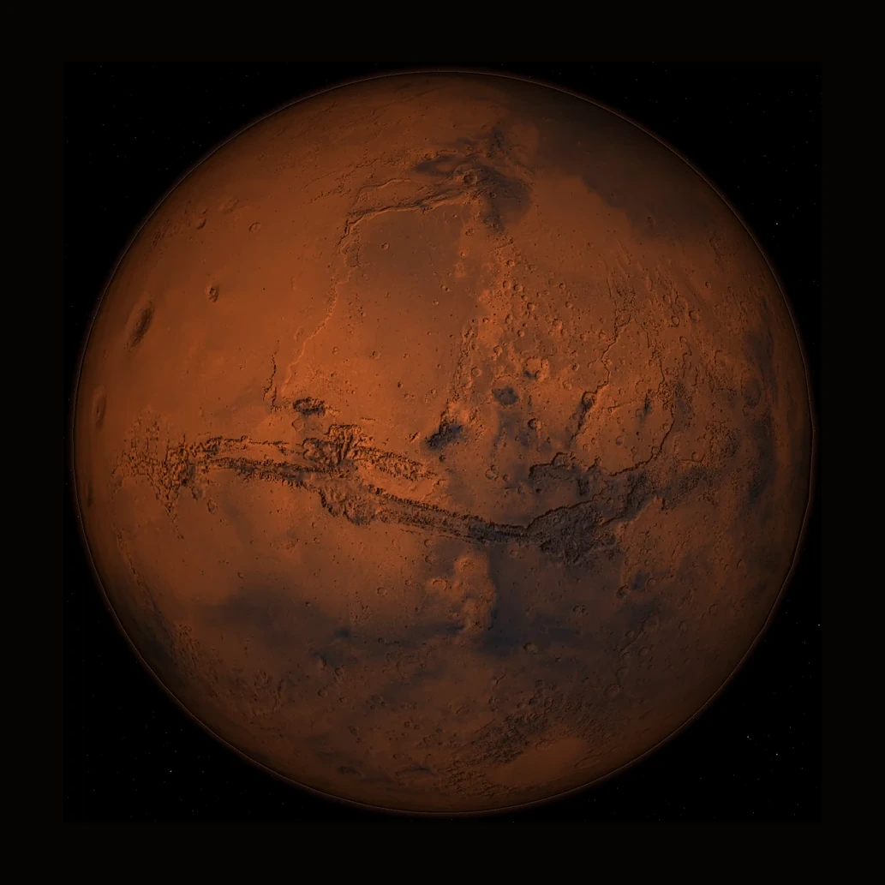
The choice of the settlement site is one of the most critical and binding decisions of the entire Martian exploration. On this geographic choice directly depends the sustainability of the base's energy budget — the delicate balance between the capacity to generate power (tied to insolation for photovoltaic effectiveness) and the need to consume it (heating the habitats in a cold environment and extracting the ice). Beyond the energy factors, the location constrains structural safety and access to vital resources such as water, fundamental for the in-situ production of oxygen and propellant through ISRU (In-Situ Resource Utilization) technologies.La scelta del sito d'insediamento è una delle decisioni più critiche e vincolanti dell'intera esplorazione marziana. Da questa scelta geografica dipende direttamente la sostenibilità del bilancio energetico della base — il delicato equilibrio tra la capacità di generare potenza (legata all'insolazione per l'efficacia del fotovoltaico) e la necessità di consumarla (riscaldamento degli habitat in un ambiente freddo ed estrazione del ghiaccio). Oltre ai fattori energetici, la localizzazione vincola la sicurezza strutturale e l'accesso a risorse vitali come l'acqua, fondamentale per la produzione in situ di ossigeno e propellente tramite tecnologie ISRU (In-Situ Resource Utilization).
The study demonstrates how open planetary data and open-source GIS tools can produce, transparently and reproducibly, a decisional suitability map, a ranked shortlist of candidate sites and a planning reading of the territory (water/energy vocations and strategic priority). The main output is the composite 0–5 suitability map with its candidate sites.Lo studio dimostra come dati planetari aperti e strumenti GIS open-source possano produrre, in modo trasparente e riproducibile, una mappa decisionale di idoneità, una rosa di siti candidati ordinati e una lettura pianificatoria del territorio (vocazioni acqua/energia e priorità strategica). L'output principale è la mappa di idoneità composita 0–5 con i relativi siti candidati.
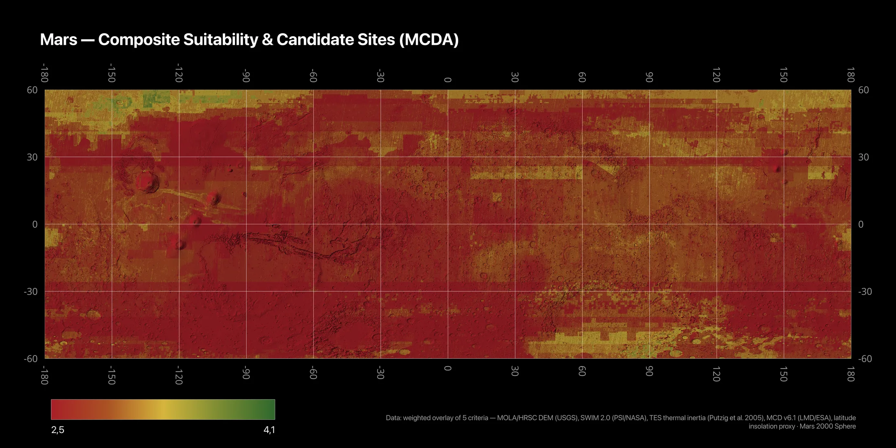
The study area covers the entire planet Mars, restricted to the latitudinal band between ±60°. This delimitation responds to a twofold need: on one hand it coincides with the extent of the subsurface-ice data (SWIM project), on the other it reflects precise logistical constraints — the polar zones are too cold and in the dark for too long, while the equatorial regions show a strong scarcity of accessible ice. On the technical side, the entire workflow adopts the Mars 2000 (Sphere) reference system (ESRI:104971, radius 3,396,190 m), native to the MOLA/HRSC models: every layer was reprojected into this CRS to ensure geometric consistency during the overlays.L'area di studio interessa l'intero pianeta Marte, circoscritta alla fascia latitudinale compresa tra ±60°. Questa delimitazione risponde a una duplice necessità: da un lato coincide con l'estensione dei dati sul ghiaccio sotterraneo (progetto SWIM), dall'altro riflette precisi vincoli logistici — le zone polari sono troppo fredde e a lungo al buio, mentre le regioni equatoriali presentano forte scarsità di ghiaccio accessibile. Sotto il profilo tecnico, l'intero flusso di lavoro adotta il sistema di riferimento Mars 2000 (Sphere) (ESRI:104971, raggio 3.396.190 m), nativo dei modelli MOLA/HRSC: ogni layer è stato riproiettato in questo CRS per garantire coerenza geometrica durante le sovrapposizioni.
For the visual exploration of the data, an interactive 3D globe of Mars was implemented: you can freely rotate and zoom, and from the Layers panel you can toggle the individual levels of the analysis on and off — the intermediate maps (§6), the reclassified criteria (§7), the suitability map with the candidate sites (§8–9) and the functional vocations (§10) — projected directly onto the sphere. The basemap is the natural-colour Viking mosaic; the SWIM and suitability layers cover the ±60° analysis band.Per l'esplorazione visiva dei dati è stato implementato un globo 3D interattivo di Marte: si ruota e si zooma liberamente, e dal pannello Layers si attivano e disattivano i singoli livelli dell'analisi — le mappe intermedie (§6), i criteri riclassificati (§7), la mappa di idoneità con i siti candidati (§8–9) e le vocazioni funzionali (§10) — proiettati direttamente sulla sfera. La base è il mosaico Viking a colori naturali; i livelli SWIM e di idoneità coprono la fascia di analisi ±60°.
Some physiographic and geological references useful as context for reading the results of the suitability model:Alcuni riferimenti fisiografici e geologici utili come contesto per leggere i risultati del modello di idoneità:
| Dataset | UseUso | ResolutionRisoluzione | SourceFonte |
|---|---|---|---|
| MOLA / HRSC Blended DEM Global v2 | Elevation → slope, hillshadeElevazione → pendenza, hillshade | 200 m | USGS Astrogeology / PDS |
| SWIM 2.0 — Combined Ice Consistency | Water-ice accessAccesso all'acqua ghiacciata | 3 km | Planetary Science Institute / NASA (Morgan et al. 2021) |
| TES Thermal Inertia (Nightside 2003) | Surface material / soilMateriale superficiale / suolo | 3 km (20 ppd) | MGS-TES, Putzig & Mellon (PSI, 2005) |
| Mars Climate Database v6.1 | Mean surface temperatureTemperatura superficiale media | GCM (~5°) | LMD / ESA |
| Insolation (latitude proxy) | Solar potential (energy)Potenziale solare (energia) | derivedderivato | Computed from DEMCalcolato dal DEM |
| Viking Colorized Mosaic (MDIM 2.1) | BasemapMappa di base | 232 m | USGS / NASA |
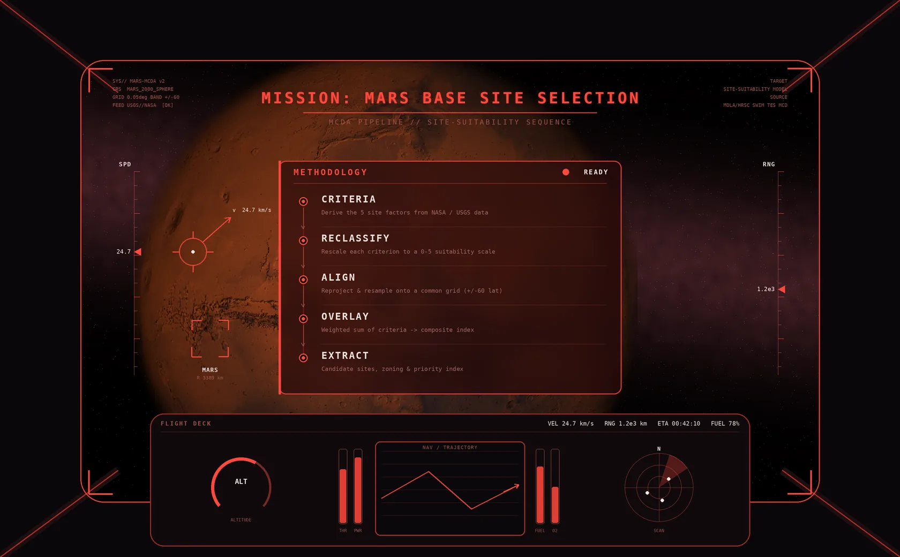
The methodology is founded on Multi-Criteria Analysis (MCDA), a structured decisional approach that integrates heterogeneous factors — morphological, geological, energy and resource — into a single quantitative, transparent and reproducible model. The entire workflow, developed in QGIS, unfolds in five sequential phases.La metodologia si fonda sull'Analisi Multicriterio (MCDA), un approccio decisionale strutturato che integra fattori eterogenei — morfologici, geologici, energetici e di risorsa — in un unico modello quantitativo, trasparente e riproducibile. L'intero flusso, sviluppato in QGIS, si articola in cinque fasi sequenziali.
From the NASA/USGS open-source sources, the five factors governing engineering suitability were identified: slope, access to water ice, surface-material type (thermal inertia), insolation and temperature. Each criterion was derived from the original data through dedicated processing — slope computation from the DEM, fusion of the three SWIM ice levels, conversion of the binary TES data, extraction of temperatures from the global climate model.Dalle fonti open-source NASA/USGS sono stati individuati i cinque fattori che governano l'idoneità ingegneristica: pendenza, accesso all'acqua ghiacciata, tipologia di materiale superficiale (inerzia termica), insolazione e temperatura. Ogni criterio è stato ricavato dai dati originari tramite elaborazioni dedicate — calcolo della pendenza dal DEM, fusione dei tre livelli di ghiaccio SWIM, conversione dei dati binari TES, estrazione delle temperature dal modello climatico globale.
Criteria expressed in different physical units (degrees, kelvin, consistency indices) are not directly comparable or summable. Each layer was therefore normalised onto an ordinal suitability scale from 0 to 5 (0 = unsuitable area or excluding constraint, 5 = optimal condition).Criteri espressi in unità fisiche diverse (gradi, kelvin, indici di consistenza) non sono direttamente confrontabili né sommabili. Ciascun layer è stato quindi normalizzato su una scala ordinale di idoneità da 0 a 5 (0 = area inadatta o vincolo escludente, 5 = condizione ottimale).
The five criteria come from sources with different CRS, resolutions and extents. Before the overlay, each layer was reprojected and resampled — with the average method, which preserves information by averaging the source pixels — onto a common grid: Mars 2000 Sphere CRS, extent −180°/+180° × −60°/+60° (the band imposed by the ice coverage) and a resolution of 0.05° (≈ 3 km).I cinque criteri provengono da fonti con CRS, risoluzioni ed estensioni differenti. Prima dell'overlay ogni layer è stato riproiettato e ricampionato — con metodo average, che preserva l'informazione mediando i pixel sorgente — su una griglia comune: CRS Mars 2000 Sphere, estensione −180°/+180° × −60°/+60° (la fascia imposta dalla copertura del ghiaccio) e risoluzione di 0,05° (≈ 3 km).
The heart of the MCDA is the creation of a composite suitability index, obtained by combining the reclassified criteria through a weighted sum in which each factor contributes in proportion to its strategic importance. For the index to stay consistent with the 0–5 scale, the sum of the weights equals 1: suitability = Σ weightᵢ × criterionᵢ.Il cuore dell'MCDA è la creazione di un indice composito di idoneità, ottenuto combinando i criteri riclassificati attraverso una somma pesata in cui ogni fattore contribuisce in proporzione alla sua importanza strategica. Perché l'indice resti coerente con la scala 0–5, la somma dei pesi è pari a 1: idoneità = Σ pesoᵢ × criterioᵢ.
From the final map, the highest-scoring areas are isolated and vectorised, obtaining the candidate sites. Two final interpretive steps translate the index into the language of planning: a vocations map (balance between water resource and energy potential) and a strategic-priority index (suitability weighted by the geographic rarity of the territory).Dalla mappa finale si isolano e vettorializzano le aree a punteggio più elevato, ottenendo i siti candidati. Due passaggi interpretativi finali traducono l'indice nel linguaggio della pianificazione: una carta delle vocazioni (bilancio tra risorsa idrica e potenziale energetico) e un indice di priorità strategica (idoneità ponderata per la rarità geografica del territorio).
A scale of only five levels — it is a methodologically conscious choice: it honestly reflects the real degree of uncertainty of the planetary data (in particular ice and insolation), avoids attributing a false precision to the model and ensures consistency between the criteria. Adopting scales of different width would in fact implicitly alter the weights in the overlay phase.Scala a soli cinque livelli — è una scelta metodologicamente consapevole: riflette in modo onesto il reale grado di incertezza dei dati planetari (in particolare ghiaccio e insolazione), evita di attribuire al modello una falsa precisione e garantisce coerenza tra i criteri. Adottare scale di ampiezza diversa altererebbe infatti in modo implicito i pesi nella fase di sovrapposizione.
Average resampling — when a raster is brought onto a coarser grid, each new cell ends up covering several pixels of the original map. The average method assigns the cell the mean of all the pixels that fall within it: this way the final value summarises the whole area, without throwing away information. The simpler alternative, nearest neighbour, merely copies the value of a single pixel (the one closest to the centre) ignoring all the others: it is perfectly fine for categorical data, where an average would make no sense, but on continuous quantities such as slope, temperature or ice consistency it risks returning a value that is not very representative and more "chequerboard". For this reason, when aggregating continuous data downwards, the mean is the correct choice.Ricampionamento average — quando si porta un raster su una griglia più grossolana, ogni nuova cella finisce per coprire più pixel della mappa originale. Il metodo average assegna alla cella la media di tutti i pixel che ricadono al suo interno: così il valore finale riassume l'intera area, senza buttare via informazione. L'alternativa più semplice, il nearest neighbour, si limita invece a copiare il valore di un solo pixel (il più vicino al centro) ignorando tutti gli altri: va benissimo per i dati categorici, dove una media non avrebbe senso, ma su grandezze continue come pendenza, temperatura o consistenza del ghiaccio rischia di restituire un valore poco rappresentativo e più "a scacchiera". Per questo, aggregando verso il basso dati continui, la media è la scelta corretta.
Asymmetric weights — the assignment follows a clear principle: the irreplaceable local resources (water and energy) weigh more; the "engineerable" factors (terrain, temperature) weigh less, because their criticalities can be overcome with technical solutions. It is this judgement, made explicit in the weights table, that makes the model legible and debatable.Pesi asimmetrici — l'assegnazione segue un principio chiaro: le risorse locali insostituibili (acqua ed energia) pesano di più; i fattori "ingegnerizzabili" (terreno, temperatura) pesano meno, perché le loro criticità possono essere superate con soluzioni tecniche. È questo giudizio, esplicitato nella tabella dei pesi, a rendere il modello leggibile e discutibile.
Before the Weighted Overlay, the starting datasets were processed, standardised and homogenised to generate the intermediate cartographic layers — the informational pillars of the model, ready to be reclassified onto the common suitability scale.Prima del Weighted Overlay, i dataset di partenza sono stati elaborati, standardizzati e omogeneizzati per generare i layer cartografici intermedi — i pilastri informativi del modello, pronti per essere riclassificati sulla scala comune di idoneità.
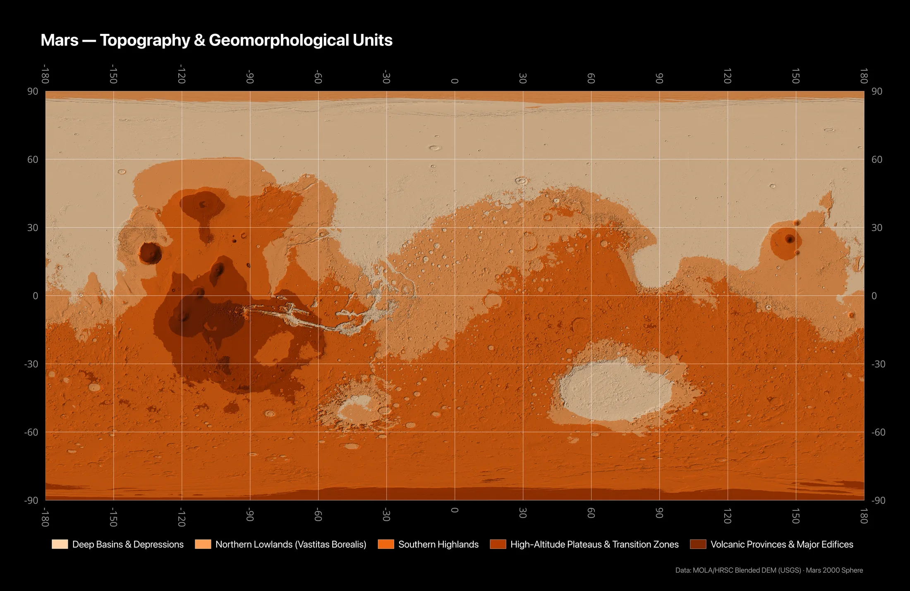
Based on the global MOLA/HRSC dataset (200 m), this layer and its hillshade define the base topography and orography. The map divides the surface into five geomorphological macro-units — northern plains (Vastitas Borealis), southern highlands, deep basins (Hellas), volcanic provinces (Tharsis, Elysium) and transition plateaus — highlighting the sharp north/south crustal dichotomy.Basato sul dataset globale MOLA/HRSC (200 m), questo livello e il relativo hillshade definiscono topografia e orografia di base. La carta suddivide la superficie in cinque macro-unità geomorfologiche — pianure settentrionali (Vastitas Borealis), terre alte meridionali, bacini profondi (Hellas), province vulcaniche (Tharsis, Elysium) e plateau di transizione — evidenziando la netta dicotomia crostale nord/sud.
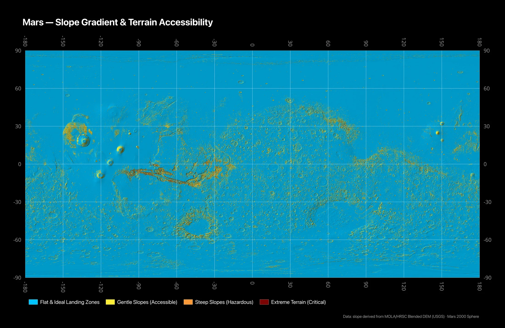
Layer derived from the global DEM by applying the correct scale factor (metres per degree) specific to Mars's planetary radius. A crucial engineering parameter to exclude steep or hazardous areas and identify the flat terrain suited to landing manoeuvres and infrastructure construction.Layer derivato dal DEM globale applicando il corretto fattore di scala (metri per grado) specifico per il raggio planetario di Marte. Parametro cruciale in ambito ingegneristico per escludere aree scoscese o pericolose e identificare i terreni pianeggianti adatti alle manovre di atterraggio e alla costruzione delle infrastrutture.
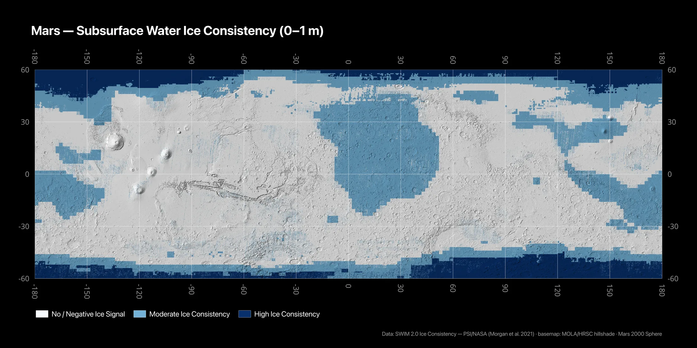
To map the presence and reachability of the water resource, the SWIM data (Subsurface Water Ice Mapping) were integrated, analysed at three depth levels (0–1 m, 1–5 m, over 5 m) to return a three-dimensional picture of the consistency and stability of the subsurface ice. Hover over the other two cards for the deeper levels.Per mappare presenza e raggiungibilità della risorsa idrica sono stati integrati i dati SWIM (Subsurface Water Ice Mapping), analizzati su tre livelli di profondità (0–1 m, 1–5 m, oltre 5 m) per restituire un quadro tridimensionale della consistenza e stabilità del ghiaccio sotterraneo. Passa il mouse sulle altre due schede per i livelli più profondi.
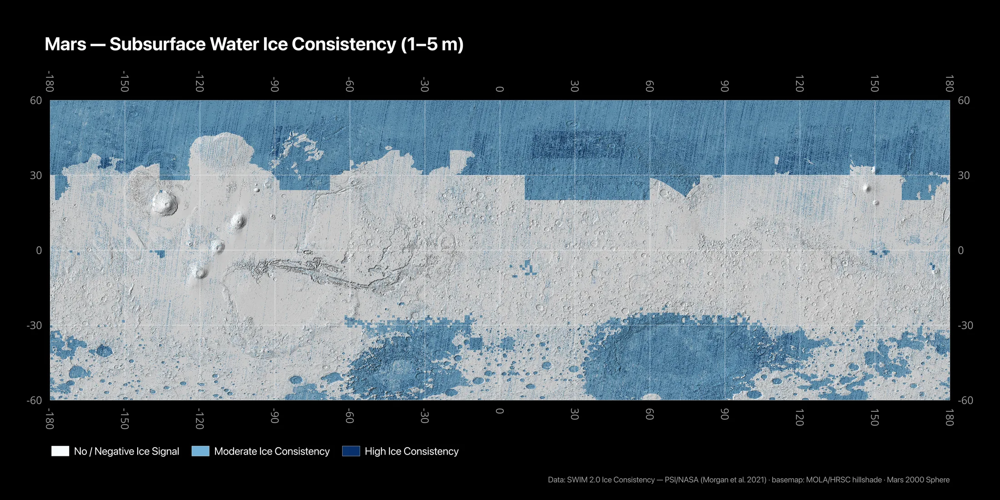
Intermediate depth band: the ice remains accessible with more demanding excavation. In the suitability model it enters with a reduced weight (0.6 multiplier) relative to the surface layer.Fascia intermedia di profondità: il ghiaccio resta accessibile con scavi più impegnativi. Nel modello di idoneità entra con un peso ridotto (moltiplicatore 0,6) rispetto allo strato superficiale.
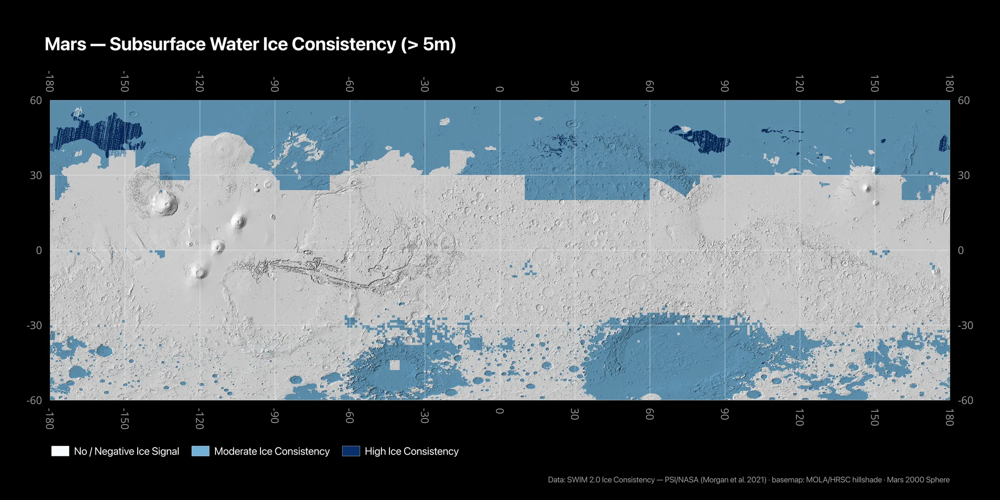
Deepest layer: resource present but logistically costly. It contributes to the combined index with the lowest weight (0.3 multiplier), weighing less than the layers reachable at the surface.Strato più profondo: risorsa presente ma logisticamente onerosa. Contribuisce all'indice combinato con il peso minore (moltiplicatore 0,3), pesando meno degli strati raggiungibili in superficie.
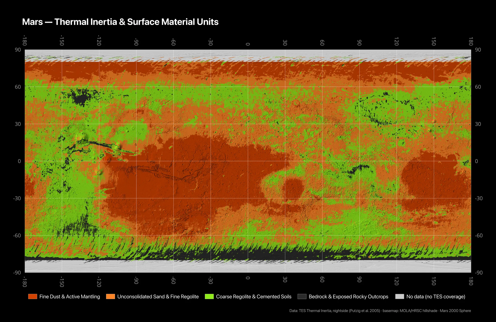
Processed from the TES instrument data (Thermal Emission Spectrometer), it analyses the night-time thermal inertia to classify the consistency and consolidation of the surface materials — from fine dust and sand to exposed rocky bedrock. It is the planetary equivalent of a land-cover map, indispensable for assessing the geotechnical stability of the terrain and the ease of excavation.Elaborato dai dati dello strumento TES (Thermal Emission Spectrometer), analizza l'inerzia termica notturna per classificare consistenza e consolidazione dei materiali superficiali — dalla polvere fine e sabbia fino al bedrock roccioso esposto. È l'equivalente planetario di una carta di copertura del suolo, indispensabile per valutare la stabilità geotecnica dei terreni e la facilità di scavo.
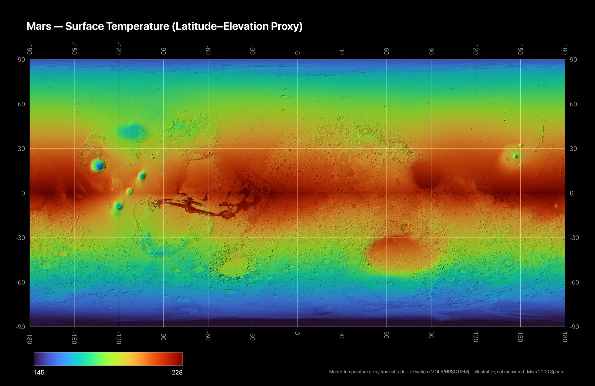
First estimate (proxy) of the temperature based exclusively on latitude and elevation. A quick approximation, later replaced by the modelled data to ensure scientific rigour — move to the next card.Prima stima (proxy) della temperatura basata esclusivamente su latitudine ed elevazione. Un'approssimazione rapida, poi sostituita dal dato modellato per garantire rigore scientifico — passa alla scheda successiva.
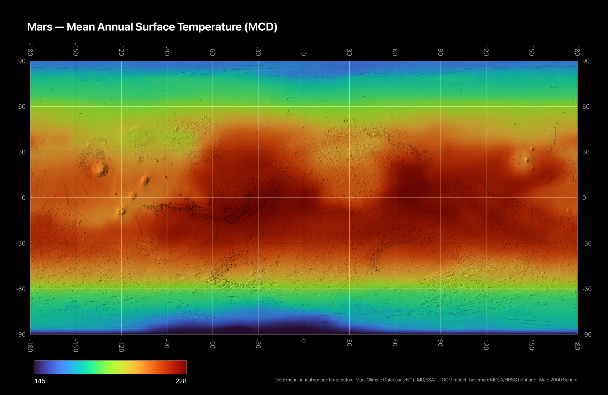
The proxy layer was replaced with the mean annual temperature data modelled by the Mars Climate Database (MCD) through global circulation models (GCM), obtaining a distinctly more accurate climatic mapping, consistent with the planet's atmospheric physics.Il layer proxy è stato sostituito con i dati di temperatura media annua modellati dal Mars Climate Database (MCD) tramite modelli di circolazione globale (GCM), ottenendo una mappatura climatica decisamente più accurata e coerente con la fisica atmosferica del pianeta.
To allow the integration of the different layers in the Weighted Overlay, each criterion was standardised and reclassified onto the common 0–5 suitability scale (0 = unsuitable area or excluding constraint, 5 = optimal condition).Per consentire l'integrazione dei diversi livelli nel Weighted Overlay, ogni criterio è stato standardizzato e riclassificato sulla scala comune di idoneità 0–5 (0 = area inadatta o vincolo escludente, 5 = condizione ottimale).
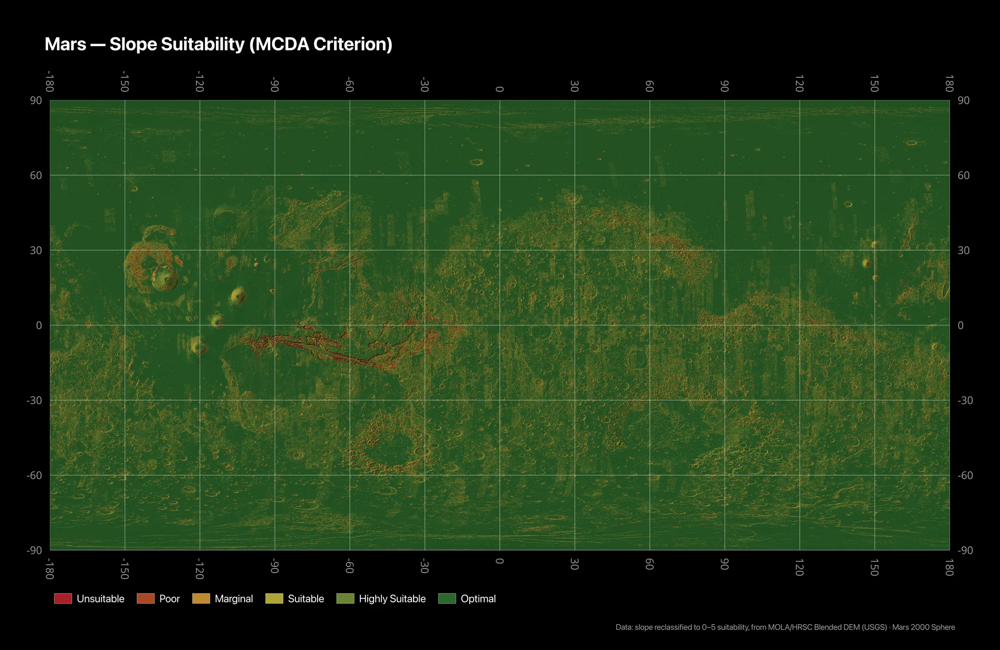
Penalises steep terrain to ensure structural stability and landing safety. Slopes 0°–2° (optimal flat areas) receive the maximum score (5); slopes above 25° get 0, as unstable or inaccessible to surface vehicles.Penalizza i terreni scoscesi per garantire stabilità strutturale e sicurezza di atterraggio. Pendenze 0°–2° (aree pianeggianti ottimali) ricevono il punteggio massimo (5); i versanti oltre 25° ottengono 0, perché instabili o inaccessibili ai mezzi di superficie.
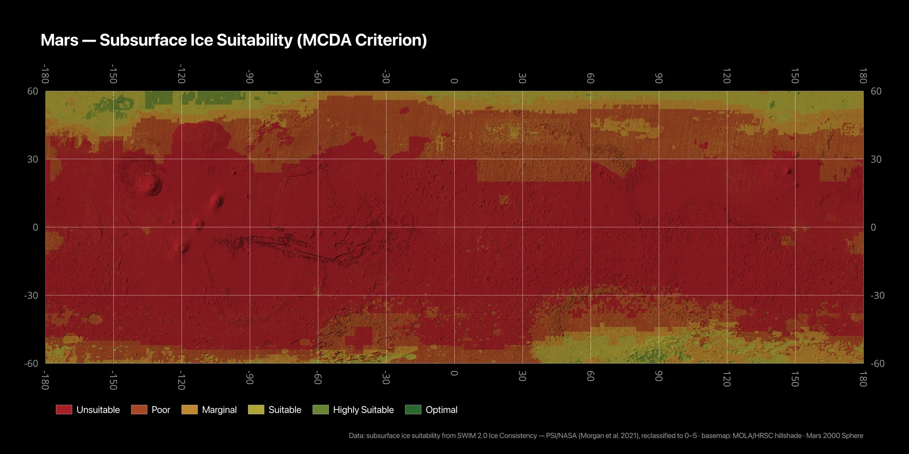
Obtained by merging the three depth layers with decreasing weight (1.0 for 0–1 m; 0.6 for 1–5 m; 0.3 over 5 m). The analysis focuses on the positive ice evidence, then normalising the combined index onto the 0–5 scale.Ottenuto fondendo i tre layer di profondità con peso decrescente (1,0 per 0–1 m; 0,6 per 1–5 m; 0,3 oltre 5 m). L'analisi si concentra sulle evidenze positive di ghiaccio, normalizzando poi l'indice combinato sulla scala 0–5.
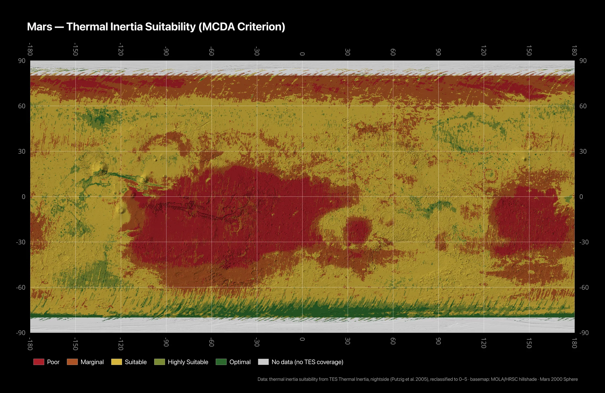
Describes the cohesion and nature of the material. Low values (24–100), attributable to fine dust and unconsolidated sand, get the minimum score (1); high values (≥ 500), indicative of outcropping rock, are optimal for anchoring foundations and heavy infrastructure (5).Descrive coesione e natura del materiale. Valori bassi (24–100), riconducibili a polveri fini e sabbie non consolidate, ottengono il punteggio minimo (1); valori elevati (≥ 500), indicativi di roccia affiorante, sono ottimali per l'ancoraggio di fondazioni e infrastrutture pesanti (5).
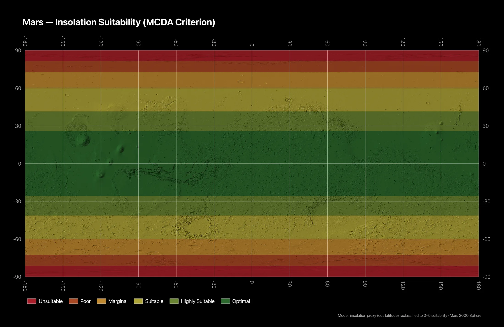
Energy input computed geometrically using the cosine of latitude as a proxy. Maximum suitability (5) at the equator, where the photovoltaic operates at maximum efficiency, with progressive degradation to 0 near the poles.Apporto energetico calcolato geometricamente usando come proxy il coseno della latitudine. Massima idoneità (5) all'equatore, dove il fotovoltaico opera alla massima efficienza, con degradazione progressiva fino a 0 in prossimità dei poli.
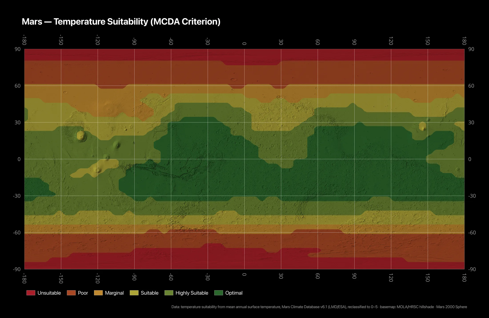
Based on the mean annual temperature data of the Mars Climate Database. Suitability is directly proportional to the thermal values: the relatively "warmer" areas receive the maximum score (5), reducing the energy expenditure for heating the habitats and thermoregulating the plants.Basato sui dati di temperatura media annua del Mars Climate Database. L'idoneità è direttamente proporzionale ai valori termici: le aree relativamente più "calde" ricevono il punteggio massimo (5), riducendo il dispendio energetico per il riscaldamento degli habitat e la termoregolazione degli impianti.
The final composite index was computed as a weighted sum of the five reclassified layers: suitability = Σ weightᵢ × criterionᵢ. The sum of the weights equals 1, so the output stays on the continuous 0–5 scale. The weight assignment reflects a fundamental engineering principle: the irreplaceable local resources are worth more than the environmental criticalities that can be compensated with technology.L'indice composito finale è stato calcolato come somma pesata dei cinque layer riclassificati: idoneità = Σ pesoᵢ × criterioᵢ. La somma dei pesi è pari a 1, così l'output resta sulla scala continua 0–5. L'assegnazione dei pesi riflette un principio ingegneristico fondamentale: le risorse locali insostituibili valgono più delle criticità ambientali compensabili con la tecnologia.
| CriterionCriterio | WeightPeso | RationaleMotivazione |
|---|---|---|
| Ice (water)Ghiaccio (acqua) | 0,35 | Hardest constraint: the lack of accessible water for ISRU effectively disqualifies the site. It is the dominant parameter of the model.Il vincolo più stringente: l'assenza di acqua accessibile per l'ISRU di fatto squalifica il sito. È il parametro dominante del modello. |
| Insolation (energy)Insolazione (energia) | 0,20 | Crucial for the energy budget, but partly "engineerable" (by oversizing the photovoltaic array or adding nuclear reactors).Cruciale per il bilancio energetico, ma in parte "ingegnerizzabile" (sovradimensionando il campo fotovoltaico o aggiungendo reattori nucleari). |
| Slope (terrain)Pendenza (terreno) | 0,15 | Strongly affects operations, but construction and manoeuvres remain feasible on moderate slopes with adequate civil engineering.Incide molto sulle operazioni, ma costruzione e manovre restano fattibili su pendenze moderate con adeguata ingegneria civile. |
| Thermal inertia (soil)Inerzia termica (suolo) | 0,15 | Determines foundation stability and mitigates dust risk; important but not as decisive as water availability.Determina la stabilità delle fondazioni e mitiga il rischio polvere; importante ma non decisivo quanto la disponibilità d'acqua. |
| TemperatureTemperatura | 0,15 | Contained weight because it is already physically correlated with insolation, following the same latitudinal trend.Peso contenuto perché già fisicamente correlato all'insolazione, secondo lo stesso andamento latitudinale. |
The processing produces the raster suitability.tif, a continuous 0–5 surface that constitutes the final suitability map — the analytical base from which the polygons of the optimal candidate sites were extracted.L'elaborazione produce il raster suitability.tif, superficie continua 0–5 che costituisce la mappa di idoneità finale — la base analitica da cui sono stati estratti i poligoni dei siti candidati ottimali.
To extract the candidate sites, a spatial query was applied isolating the cells above the 96th percentile (suitability ≥ 3.18, i.e. the ~4% best terrain on the planet), then vectorised into polygons. A geometric area filter discarded the polygons below 3,000 km²: from this selection four macro-areas emerge, attributable to two main geographic families.Per estrarre i siti candidati è stata applicata una query spaziale isolando le celle sopra il 96° percentile (idoneità ≥ 3,18, ovvero il ~4% dei terreni migliori del pianeta), poi vettorializzate in poligoni. Un filtro geometrico di area ha scartato i poligoni sotto i 3.000 km²: da questa selezione emergono quattro macro-aree, riconducibili a due famiglie geografiche principali.
| # | RegionRegione | Lat | Area (km²) | SuitabilityIdoneità |
|---|---|---|---|---|
| 1 | Northern mid-latitudes (Arcadia / Vastitas) | 53,9°N | 983.263 | 3,30 |
| 2 | Circum-Hellas south | −51,4° | 272.280 | 3,58 |
| 3 | Circum-Hellas south | −56,0° | 118.245 | 3,55 |
| 4 | Elysium Planitia | 21,6°N | 52.874 | 3,27 |
The four macro-sites show a clear trade-off between extent and quality: Arcadia/Vastitas dominates by area but with average suitability, whereas the circum-Hellas band reaches the highest scores over smaller surfaces.I quattro macro-siti mostrano un chiaro compromesso tra estensione e qualità: Arcadia/Vastitas domina per area ma con idoneità media, mentre la fascia circum-Hellas raggiunge i punteggi più alti su superfici più contenute.
The northern mid-latitude plains (Arcadia/Vastitas) form the single largest continuous polygon (~1 million km²), standing out for their flat morphology and diffuse ice at shallow depths, at a latitude still favourable to solar energy. The southern circum-Hellas band obtains the model's highest scores (up to 3.58): the depression of the Hellas basin generates greater atmospheric pressure and less harsh temperatures which, combined with the stability of the southern mid-latitude ice, maximise the site's efficiency. No site reaches the maximum score of 5: every location remains, intrinsically, an engineering and environmental compromise.Le pianure delle medie latitudini nord (Arcadia/Vastitas) formano il poligono continuo più esteso in assoluto (~1 milione di km²), distinguendosi per morfologia pianeggiante e ghiaccio diffuso a profondità ridotte, a una latitudine ancora favorevole all'energia solare. La fascia circum-Hellas meridionale ottiene i punteggi più alti del modello (fino a 3,58): la depressione del bacino di Hellas genera pressione atmosferica maggiore e temperature meno rigide che, combinate con la stabilità del ghiaccio delle medie latitudini sud, massimizzano l'efficienza del sito. Nessun sito raggiunge il punteggio massimo di 5: ogni localizzazione resta, intrinsecamente, un compromesso ingegneristico e ambientale.
External validation: the sites identified in the northern hemisphere (such as Arcadia Planitia) coincide almost perfectly with the regions currently studied by NASA as potential Landing Zones for future human missions. The GIS model was thus able to converge autonomously towards the real strategic objectives of international aerospace planning.Validazione esterna: i siti individuati nell'emisfero nord (come Arcadia Planitia) coincidono quasi perfettamente con le regioni attualmente studiate dalla NASA come potenziali Landing Zones per le future missioni umane. Il modello GIS ha quindi saputo convergere in autonomia verso i reali obiettivi strategici della pianificazione aerospaziale internazionale.
For each macro-site, the analysis is supported by a dedicated terrain map, focused on the soil texture (derived from thermal inertia over TES thresholds) and on the micro-relief.Per ciascun macro-sito, l'analisi è supportata da una carta del terreno dedicata, focalizzata sulla tessitura del suolo (derivata dall'inerzia termica su soglie TES) e sul micro-rilievo.
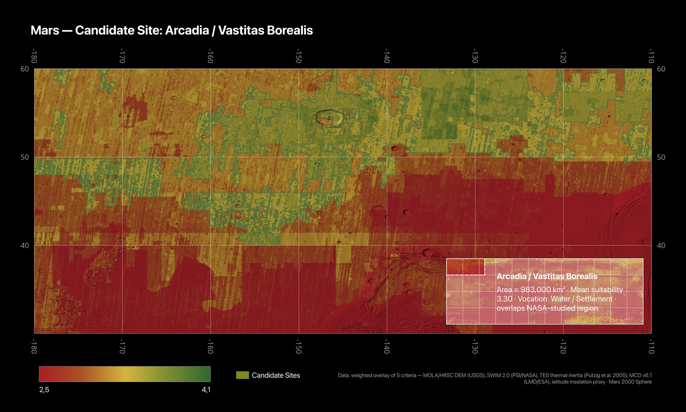
The largest macro-site: smooth northern plain with diffuse ice at shallow depth. Move to the next card for the terrain map.Il macro-sito più esteso: pianura settentrionale liscia con ghiaccio diffuso a bassa profondità. Passa alla scheda successiva per la carta del terreno.
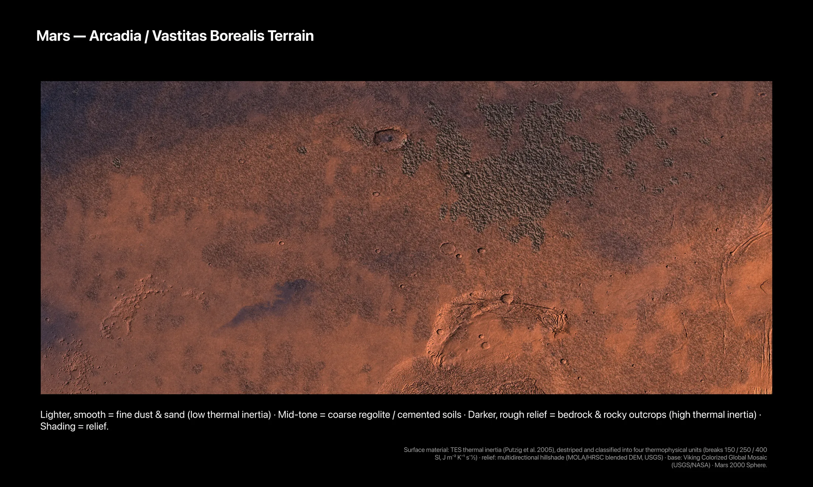
Soil texture and micro-relief derived from thermal inertia: material consistency and geotechnical stability for anchoring the infrastructure.Tessitura del suolo e micro-rilievo derivati dall'inerzia termica: consistenza dei materiali e stabilità geotecnica per l'ancoraggio delle infrastrutture.
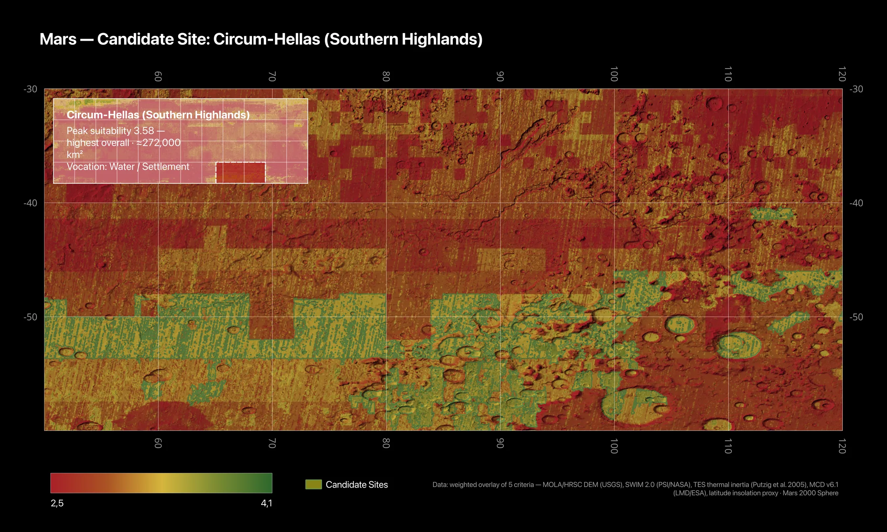
The family of sites with the highest scores in the model, driven by the depression of the Hellas basin: greater pressure and less harsh temperatures.La famiglia di siti con i punteggi più alti del modello, guidata dalla depressione del bacino di Hellas: pressione maggiore e temperature meno rigide.
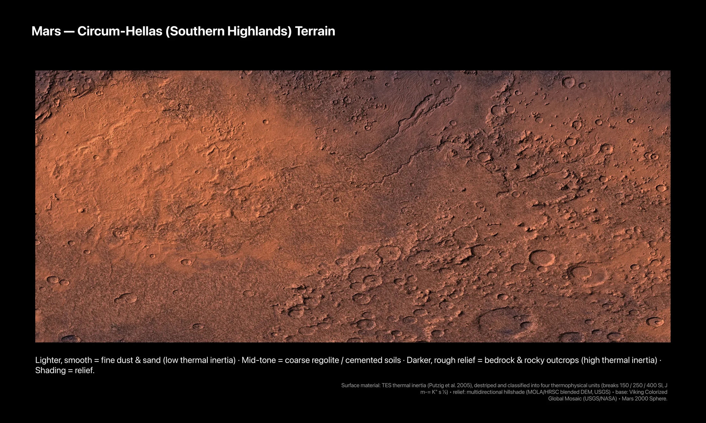
Terrain map of the Hellas margin: soil texture and micro-relief supporting the suitability assessment.Carta del terreno del margine di Hellas: tessitura del suolo e micro-rilievo a supporto della valutazione di idoneità.
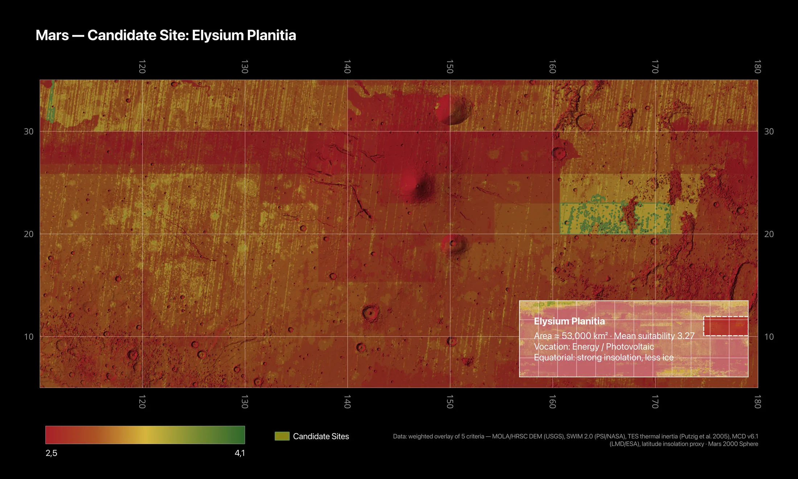
The most equatorial site (21.6°N): volcanic plain with good insolation, a compromise between energy and ice access.Il sito più equatoriale (21,6°N): pianura vulcanica con buona insolazione, compromesso tra energia e accesso al ghiaccio.
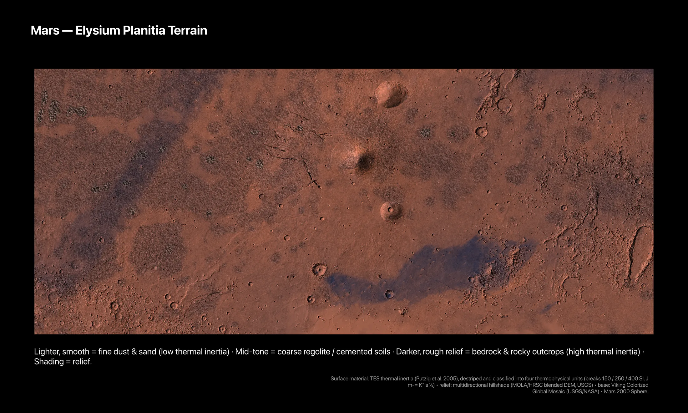
Texture and micro-relief of the equatorial site, to assess foundation stability and ease of excavation.Tessitura e micro-rilievo del sito equatoriale, per valutare stabilità delle fondazioni e facilità di scavo.
To translate the continuous raster into an operational planning tool, a spatial aggregation over a hexagonal grid was performed. This discretisation reduces the sampling biases typical of regular grids, assigning each macro-cell a functional vocation determined by the balance between subsurface water resource and energy potential:Per tradurre il raster continuo in uno strumento operativo di pianificazione, è stata eseguita un'aggregazione spaziale su griglia esagonale. Questa discretizzazione abbatte i bias di campionamento tipici delle griglie regolari, assegnando a ciascuna macro-cella una vocazione funzionale determinata dal bilancio tra risorsa idrica sotterranea e potenziale energetico:
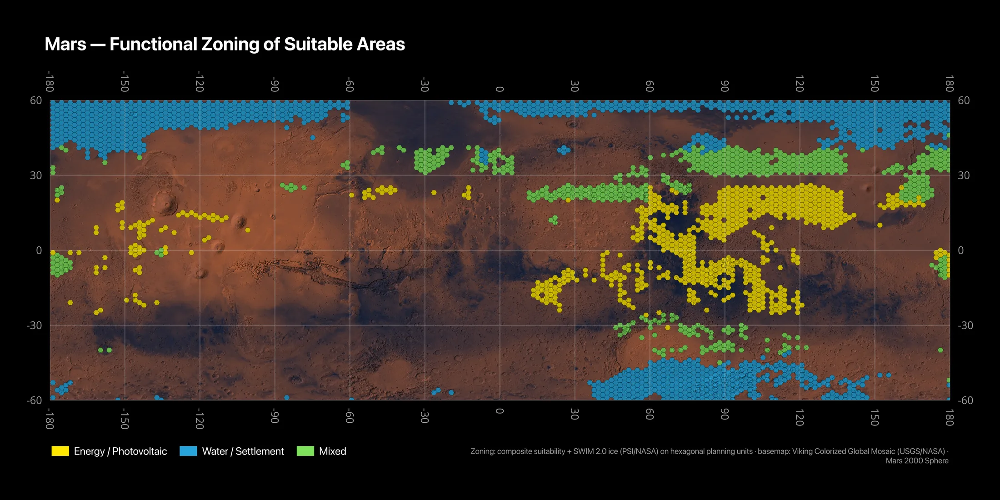
As an exploratory extension, a strategic-priority index was implemented that weights the absolute suitability by the geographic rarity of each territory, following the "scarcity rent" principle: the rarest and hardest-to-replicate configurations mathematically take on a priority value to safeguard. The planetary-scale analysis highlights that the overall suitable land represents only ~13.6% of Mars's surface, and that within it the Mixed class extends over barely ~3.1% — the single rarest, most critical and most strategic geographic niche of the entire planetary body.Come estensione esplorativa è stato implementato un indice di priorità strategica che pesa l'idoneità assoluta per la rarità geografica di ciascun territorio, secondo il principio della "rendita di scarsità": le configurazioni più rare e difficili da replicare assumono matematicamente un valore prioritario da presidiare. L'analisi su scala planetaria evidenzia che la terra complessivamente idonea rappresenta solo il ~13,6% della superficie di Marte, e che al suo interno la classe Mista si estende appena per il ~3,1% — la nicchia geografica in assoluto più rara, critica e strategica dell'intero corpo planetario.
Methodological note: the strategic-priority index is to be understood exclusively as a relative, dimensionless value of spatial efficiency, and makes no reference to economic or monetary estimates.Nota metodologica: l'indice di priorità strategica è da intendersi esclusivamente come valore relativo e adimensionale di efficienza spaziale, e non fa alcun riferimento a stime economiche o monetarie.
QGIS · GDAL · Python (raster processing with NumPy/PIL) · MCDA weighted overlay · Raster reclassification & algebra · Zonal statistics on a hexagonal grid · Reprojection & planetary datums (Mars 2000 Sphere) · Data engineering (PDS TES binary, ASCII MCD → GeoTIFF) · Interactive 3D globe (Three.js / WebGL) · Tile pyramids & streaming level-of-detail · GLSL shaders (fresnel atmosphere, colour grading) · SVG data-visualization · HTML / CSS / JavaScript · Cartographic design & post-production.QGIS · GDAL · Python (raster processing con NumPy/PIL) · MCDA weighted overlay · Riclassificazione e algebra raster · Zonal statistics su griglia esagonale · Reprojection & datum planetari (Mars 2000 Sphere) · Data engineering (binario PDS TES, ASCII MCD → GeoTIFF) · Globo 3D interattivo (Three.js / WebGL) · Piramidi di tile & streaming level-of-detail · Shader GLSL (atmosfera fresnel, color grading) · Data-visualization in SVG · HTML / CSS / JavaScript · Cartographic design & post-produzione.